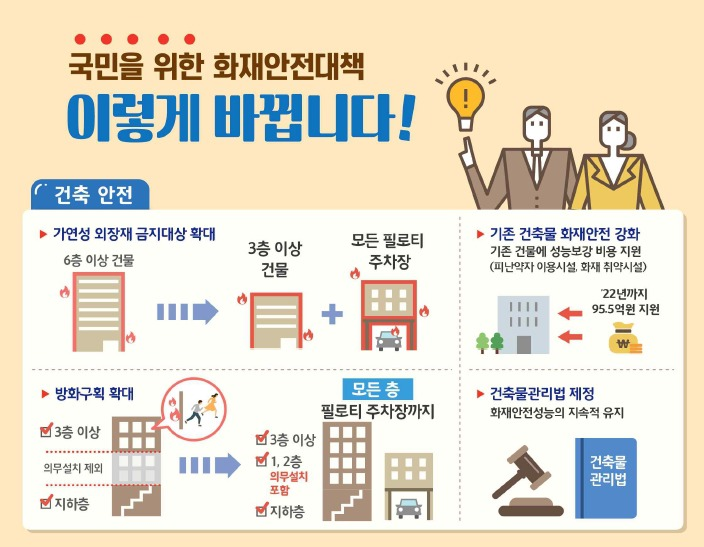

대형 화재 참사 키운 스티로폼 외장재,
3층 건물부터 못 쓴다

2017년 12월 발생한 충북 제천 스포츠센터 참사 등 고층 빌딩 화재 상당수는 스티로폼 외벽이 불길의 전파경로가 됐다. 하지만 앞으로 3층 이상 건축물에는 스티로폼 외장재를 사용할 수 없게 된다. 스프링클러가 없어 화재에 취약했던 고시원에는 간이스프링클러 설치 의무를 부과하고 일부 비용을 지원한다.
행정안전부는 이 같은 내용을 담은 ‘범정부 화재안전 특별대책’을 마련해 30일 국무회의에 보고했다고 밝혔다. 이번 특별대책은 대형 참사 재발을 막기 위해 지난해 2월 청와대와 행안부, 산업통상자원부, 국토교통부, 소방청 등이 공동 구성한 ‘화재안전TF’에서 마련한 것으로 227개 개선과제를 포함하고 있다.
먼저 건축물 안전 기준을 강화한다. 현재 6층 이상 건물에는 스티로폼 등 불에 취약한 외장재 사용이 금지돼 있는데 앞으로는 3층 이상 건물까지도 사용을 금지한다. 병원이나 학교 등 피난이 어려운 약자들이 이용하는 건축물에도 스티로폼 외벽 사용을 금지한다.
화재 확산을 막는 층간 방화구획 설치 의무도 지금까지 1층과 2층은 제외돼 왔으나 앞으로는 건물 내 모든 층과 필로티 주차장으로까지 확대한다.
또 용접 작업 중 발생하는 불티가 화재로 연결되는 경우가 많다는 진단에 따라 가연성 물질이 있는 모든 작업장에서 용접, 용단 등 화기작업을 할 때는 화재감시자를 배치해 2인1조로 하도록 정비한다.
스프링클러가 없는 고시원 1826곳에는 간이스프링클러 설치를 의무화하고 일부 비용을 지원할 계획이다. 의료기관의 경우, 건물 층수나 면적에 따라 스프링클러 설치 의무가 달랐는데 앞으로는 모든 병원급 의료기관에 스프링클러와 자동화재속보설비 설치가 의무화된다. 냉장고나 세탁기 등에 표시하는 ‘전기용품 권장 안전사용기간’을 화재 위험이 있는 선풍기와 전기밥솥에도 확대 적용한다.
화재 예방과 대응을 위한 역량도 강화한다. 얼마 전 강원도 산불 진화에서 효과가 확인된 화재 초기 최고 수준 우선대응 후 단계적 완화, 전국 단위 통합대응 등을 제도화하기 위해 119통합정보시스템을 구축하고 ‘화재 대응에 관한 법률’을 제정한다.
이와 함께 지난해 5만1000명 수준이었던 현장 소방인력도 2022년 6만7000명까지 증원한다. 소방대원들이 사용하는 아날로그무전기는 연내 디지털무전기로 전량 교체하고, 좁은 골목길 등에서 효과적인 소형 사다리차 보급도 늘린다. 이번 특별대책에는 지난해 7월부터 12월까지 실시한 1단계 화재안전 특별조사에서 드러난 문제점도 검토해 반영했다.
김남중 기자 njkim@kmib.co.kr
 190430 석간 (안전제도과) 정부. 제2의 제천.밀양 화재 참사 막는다.pdf
190430 석간 (안전제도과) 정부. 제2의 제천.밀양 화재 참사 막는다.pdf
준불연 가등급 EPS 단열재 DK보드
건축용 / 드라이비트용 / 판넬용
문의 1855-2240